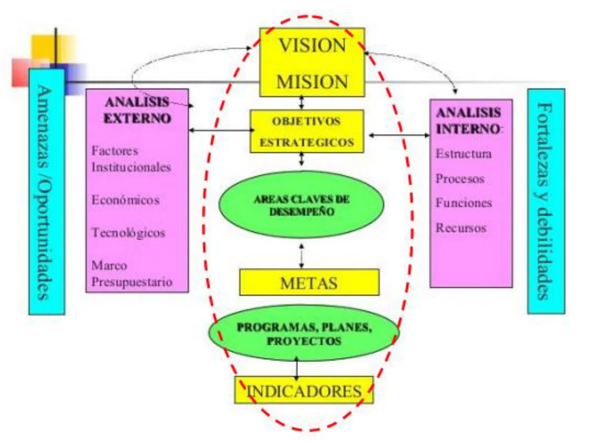

Formación de Emprendedores
Una electiva sin parciales: aprobás armando un proyecto productivo real, de la idea hasta el presupuesto.
Resumen no juzgado. Todavía nadie evaluó si alcanza para estudiar solo con esto.
Materia del pasado. Ya no está en el plan de estudios.
En el Drive no hay ningún examen
Miré el índice de los 49 archivos que se pudieron bajar, de la carpeta de cursado 2026, y abrí lo de cada clase. Ninguno es un parcial ni un final. El instructivo 2026 confirma que la materia se aprueba con el trabajo práctico. Por eso acá no hay cuentas de «cuántas veces se tomó» ni página de ejercicios. Los bloques de lo que se toma y el amarillo marcan lo que pide el TPI 2026.
La idea general
La materia te hace pensar como alguien que va a abrir una empresa de verdad. Elegís un proyecto y lo analizás con un conjunto de herramientas. Cada herramienta usa lo que encontró la anterior. Al final, un presupuesto te dice si los números cierran.
La frase que cierra la clase de herramientas lo resume. «Un negocio no planificado es un negocio planificado para fracasar» (Clase 4, Herramientas, diap. 14).
Es transversal a todas las ingenierías de la facultad. Por eso el foco no está en la programación, y el proyecto puede ser de cualquier rubro. Eso sí, tiene que ser productivo. La cátedra valora la profundidad del análisis, no la simpleza de la idea.
En criollo
Pensalo como sacar una radiografía de un negocio antes de poner plata. Primero mirás quién está alrededor (proveedores, canales, clientes). Después, contra quién competís. Con eso sabés qué tenés a favor y en contra. Recién ahí decidís quién querés ser y hacés las cuentas.
Cómo se aprueba
Todo sale del instructivo de cursado 2026, página 1.
| Condición | Qué te piden |
|---|---|
| Regularidad | 70 % de asistencia, y la idea de emprendimiento aprobada junto con la cadena de valor |
| Aprobación directa | 70 % de asistencia, y el trabajo completo aprobado antes de que termine el cuatrimestre |
| Libre | Quien no cumpla ninguna de las dos |
Si quedaste regular, seguís con el trabajo hasta terminarlo. Cuando te lo aprueban, te anotás en la mesa más cercana y suben la nota. En ningún caso hay defensa del trabajo.
Otros datos del cursado 2026:
- Grupos de 2 alumnos como máximo (instructivo, pág. 2).
- Las consultas y las entregas van por el mail de la cátedra, que está en el instructivo.
- Todo el material nuevo aparece en el repositorio de la cátedra.
- Correlativa, según el programa: Ingeniería y Sociedad aprobada.
El programa del Drive es de 2020 y dice otra cosa
El programa de 2020 habla de un examen final que es la defensa del trabajo, y de trabajos prácticos aparte. El instructivo 2026 dice que no hay defensa y solo pide el TPI. Para las condiciones seguí el instructivo. Del programa tomé solo los contenidos.
El recorrido
El TPI ordena casi toda la materia. Estas son las diez cosas que pide el instructivo y la clase donde se ven.
| Punto del TPI | Herramienta | Clase |
|---|---|---|
| 1 | Idea justificada con búsqueda de información | 2, 5 y 7 |
| 2 | Cadena de valor externa | 4 |
| 3 | Diamante de Porter | 4 y 8 |
| 4 | FODA con acciones y valoración | 6 |
| 5 | Valores | 6 y 8 |
| 6 | Objetivos a corto, mediano y largo plazo | 4 y 8 |
| 7 | Misión y visión | 9 |
| 8 | Estrategias comerciales | 10 |
| 9 | Presupuesto anual, mes por mes | 10 |
| 10 | Conclusión final | Al cierre |
Las clases 1 a 3 son la base. Hablan de la actitud emprendedora, de cómo priorizar y del planeamiento estratégico.
Cómo se conecta
Cada paso le pasa información al siguiente, y por eso el orden importa.
- La cadena de valor externa te muestra todos los actores del negocio, con nombre y contacto.
- El diamante estudia la competencia y la tecnología, y compara tu cadena con la de los competidores.
- El FODA se arma con lo que encontraste en los dos pasos anteriores. No se saca de la cabeza.
- Los valores, objetivos, misión y visión dicen hacia dónde va la empresa.
- Las estrategias comerciales dicen cómo vas a vender.
- El presupuesto pone números. Te dice cuánto hay que vender como mínimo para que el proyecto se sostenga.

Fuente: Clase 9, Misión y visión, pág. 2. La visión y la misión ordenan todo lo de abajo, y el análisis externo e interno las alimenta.
Qué se evalúa y cómo
Los docentes corrigen el TPI. No encontré una grilla de corrección en el Drive, pero el material dice qué se busca:
- Se valora la investigación de campo, las entrevistas, los datos reales y el contacto con actores del sector (comunicado de elección de proyecto, Clase 1).
- Cada herramienta lleva una conclusión sobre para qué te sirvió (instructivo, pág. 2).
- El presupuesto tiene que permitir decidir, no solo sumar (Clase 10, Un presupuesto para una idea de negocios, diap. 3).
Conviene mandar la idea y la cadena de valor temprano. Son lo que te da la regularidad.
Lecturas y videos de la cátedra
No hay ningún examen sobre ellos, pero la cátedra los deja en el repositorio.
- Libros: El mito del emprendedor (Gerber), Gung Ho (Blanchard y Bowles), Ágilmente y En cambio (Bachrach). Lo central de los dos primeros está en esta sección.
- Videos sobre actitud emprendedora: lista de la Clase 1 y lista de la Clase 8.
- Consulta para el TPI: Guía Nacional de Vigilancia e Inteligencia Estratégica y La matriz FODA.